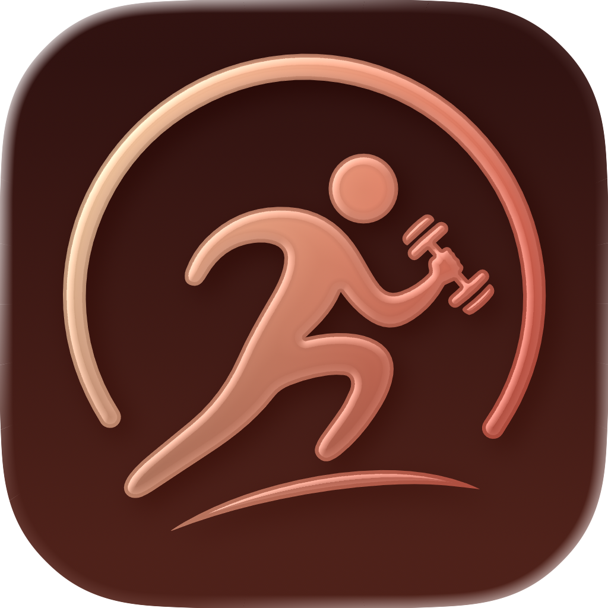

Support
Plan your workouts, log every set, and watch your week grow. Here’s how Go Gino works, what’s free, and how to reach us.
Go Gino is a workout tracker for iPhone with a coach on your side. Gino, a round pumpkin in a sky-blue sweatband, builds your saved workouts from a two-minute setup, plans your weights and reps, cheers when you beat last time, and grows a pumpkin on your week for every day you work out.
Under the friendly face is a real training log: 165 built-in exercises plus any you add, warm-ups, drop sets and supersets, a rest timer that shows on your Lock Screen, a body map that colours every muscle you worked, personal bests, badges, progress photos, and progress that’s explained in plain words.
Your workouts stay on your iPhone and in your own private iCloud. There’s no Go Gino account to create and no server of ours holding your data.
Plus comes as a Weekly or Yearly subscription or a One-time purchase. Prices come from the App Store in your country and currency, and the App shows them before you buy. Free features have no time limit and aren’t a trial, and logging your workouts stays free, always. What each plan includes can change over time, as the Terms and Conditions explain.
No. Go Gino has no account of its own. The first time you open it, a setup of about two minutes asks how you like to train, and Gino builds your saved workouts from your answers. Everything is saved on your iPhone, and if you’re signed into iCloud it’s also kept in your private iCloud, so it’s there on any other iPhone signed into the same Apple Account where you use Go Gino.
Logging your workouts stays free, always. Your saved workouts, your whole workout list, badges, export, Apple Health and every share card are free too, with no time limit, and none of them is a trial. Gino plans the first exercise of every workout for free. With Plus he plans every exercise, runs your 4-week plan if you’re an intermediate or advanced lifter, and gives you his coaching tips. The full list is under Free and Plus.
The Weekly and Yearly plans can come with a free trial for eligible new users. The App reads the trial from the App Store, so the length shown on the plan and on Apple’s purchase sheet is the one you get, and “No payment due now” appears above the button while the plan you picked starts with a free trial.
Nothing is charged until the trial ends. If you don’t cancel at least 24 hours before it ends, the subscription starts and your Apple Account is charged the plan’s price. While a trial runs, its end date is on your plan card in the You tab. A trial applies to the subscriptions only: the One-time purchase has no trial.
Apple manages subscriptions. Open the iOS Settings app, tap your name, then Subscriptions, choose Go Gino and tap Cancel Subscription. Or, in the App, open You, tap Manage subscription on your plan card, then Manage subscription again.
Cancelling takes effect at the end of the current period. Deleting the App doesn’t cancel a subscription.
Refunds are Apple’s decision under its own policies, and we can’t issue them ourselves. You can ask Apple for one at reportaproblem.apple.com.
Nothing you logged is lost. Your workouts, saved workouts, badges and history all stay, logging stays free, and Gino goes back to planning the first exercise of every workout. Your plan stays as it was, and you can come back to Plus any time from the You tab.
Sign in with the Apple Account you bought with, open Go Gino and tap Restore purchases in the You tab, or Restore purchase at the bottom of the Plus screen. You need a connection for this. Plus unlocks as soon as Apple confirms it. This works for the One-time purchase too.
From your own log. On the exercises he plans for you (the first of every workout for free, every exercise with Plus), he looks at what you lifted and how it went, then plans your next weights and reps: a little more weight once you reach the top of your rep range, and one more rep while you’re working up to it. Tap how many reps you had left after a set and he can set up your next set straight away on those exercises.
The first time you do an exercise he helps you find a starting point, and if you’re an experienced lifter he asks once for the weights you usually lift. His numbers are suggestions: always lift what feels right for you that day.
The map in Progress → Muscles colours each muscle you worked in its own colour, stronger the more recently and the more you trained it, over the last 14 days. Muscles you haven’t worked in a while stay pale, so you can spot them at a glance.
With Plus you can switch to 7 or 30 days and tap any muscle for its detail. The map is a guide, not a prescription.
Yes. While you rest, the countdown shows on your Lock Screen and in the Dynamic Island, and Go Gino sends a “Rest is up” notification when it’s time for your next set (if you allow notifications). Tap either one to go straight back to your workout.
You can turn Live Activities off in the iOS Settings app, under Go Gino.
Yes, if you turn it on in You → Apple Health. Go Gino then saves each workout you finish to Apple Health and, if you allow it, an estimate of the energy you burned, so it can count toward your Move ring. It reads back only the workouts it saved itself, so the same workout is never added twice, and it never reads any other health data. The setting is per device.
Yes, for free. You → Export your workouts makes a spreadsheet file (CSV) with one row for every set, plus a second file with your weigh-ins if you’ve logged any. Save them to Files, email them or AirDrop them. Your data is always yours to take with you.
Yes. Open Progress → All workouts, tap a workout and tap Edit to change its name, date, sets or exercises. To add a workout you did away from your phone, tap Log a past workout on the same screen. Your personal bests are worked out again after every change.
Setup is per device by design, and it takes about two minutes. Your workouts, weigh-ins, photos and personal bests still come across through iCloud, so nothing is lost. You simply confirm your answers on each device.
Yes. Logging, the rest timer, your plan, Gino’s numbers and your progress all work without a connection. Buying or restoring Plus needs one, and iCloud catches up the next time you’re online.
You can tell Gino about your knees, shoulders, back, wrists, neck or hips during setup, or later in You → Training preferences → Body focus and injuries. He then leaves exercises that commonly bother that area out of your saved workouts and suggestions, and marks them in the exercise library.
This is a cautious guide, not a medical assessment. Always check with a doctor or physiotherapist before training around an injury.
Yes. You choose each photo with Apple’s photo picker, so Go Gino never has access to your photo library, only to the photo you pick. Photos are stored on your iPhone and in your private iCloud, and nobody sees them unless you share a before-and-after card yourself.
Open You → Delete all data and confirm. This permanently removes your workouts, saved workouts, weigh-ins, progress photos, personal bests, your own exercises and your profile from this device. If you’re signed into iCloud with iCloud on for Go Gino, the deletion also reaches your iCloud and carries through to your other devices. It can’t be undone, so export your workouts first if you’d like a copy.
Deleting the App only removes the copy on that iPhone: your iCloud copy stays until you delete it, and comes back if you install the App again. Like any app’s data, Go Gino’s is also in your iPhone’s own backups (iCloud Backup or a computer backup).
Workouts already saved to Apple Health stay there, and you can delete them in the Health app. Deleting your data doesn’t cancel a subscription or remove your purchases.
Start with You → Backup and sync, which shows whether iCloud is on. Both devices need the same Apple Account with iCloud turned on for Go Gino (iOS Settings → your name → iCloud), a network connection and some free iCloud storage. Sync usually takes under a minute on Wi-Fi.
If it’s still stuck, close Go Gino fully and open it again. If that doesn’t help, write to us.
They’re good guides, not lab measurements. Gino’s weights and reps come from what you’ve logged, and the energy estimate sent to Apple Health is worked out from your body weight (or 70 kg if you haven’t added it), the kind of exercise and how long you trained. A dumbbell weight always means one dumbbell.
Only a little, and never anything you log. We don’t run a server, so your workouts, photos and profile stay on your devices and in your private iCloud, where we can’t see them.
Apart from Apple (the App Store, your iCloud, and Apple Health if you turn it on), the one company that gets any data from the App is RevenueCat, so we can understand sales. When you open the App it receives a random ID made by the App, your device’s vendor identifier, your IP address (used to work out your country) and some app and device details (such as the app and iOS version, device model and language), plus the details of any purchase, restore or renewal. It never receives your name, your email, your Health data or anything you log. To ask us to have it deleted, write to us: the Privacy Policy explains what to include.
If you email us, your message is kept in our Gmail, which Google holds. These pages are hosted on GitHub Pages, which logs visitors’ IP addresses. The Privacy Policy has the details.
English, Spanish (Latin America) and Portuguese (Brazil). The App follows your iPhone’s language.
A question, a bug, or an idea for Gino? We’d love to hear from you. In the App, tap You → Help, or write to us here:
turretspire@gmail.comReporting a bug? It helps to include your iPhone model, your iOS version, the App’s version (shown in the You tab, under About) and what you were doing when it happened.